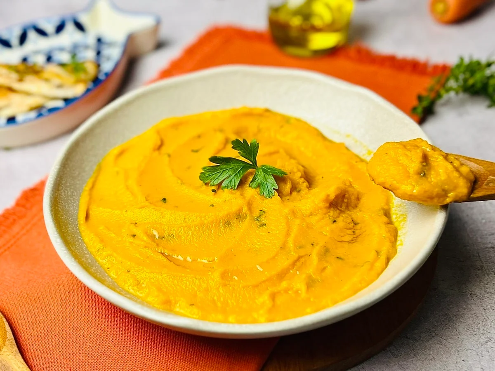
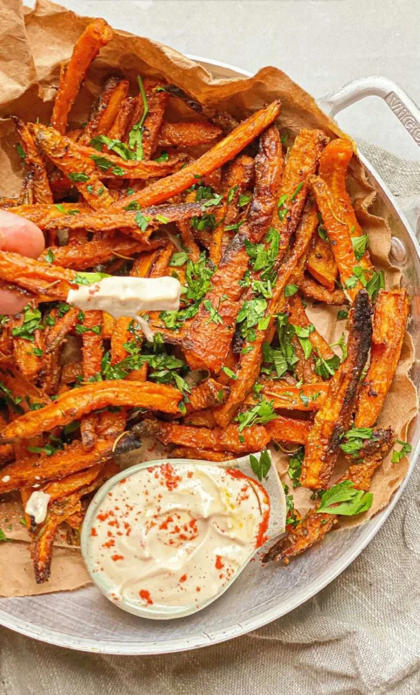
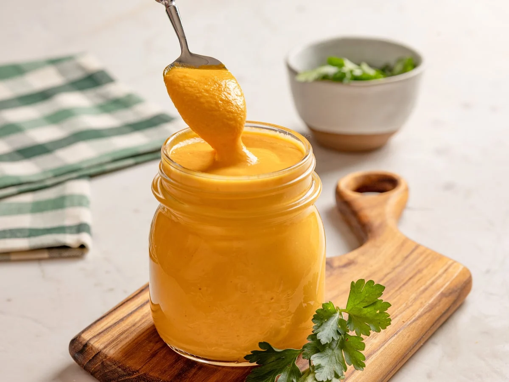

A cenoura (Daucus carota) tem sua origem na Ásia Central, mais precisamente na área que hoje corresponde ao Afeganistão, há mais de 5.000 anos. No início, suas raízes apresentavam cores como branco, amarelo ou roxo, além de terem sabor amargo e uma textura mais fibrosa. As variedades de cor laranja, com sabor mais adocicado, foram desenvolvidas por agricultores europeus, sobretudo os holandeses, a partir do século XVI.
O cultivo da cenoura é feito por meio de semeadura direta, com profundidade entre 1 e 2 cm,
podendo ocorrer ao longo de todo o ano, embora apresente melhor desenvolvimento em clima ameno (condições ideais).
Na região Sudeste, o período mais indicado para o plantio vai de novembro a março,
enquanto no Sul o cultivo de inverno é realizado entre fevereiro e agosto.
A colheita acontece entre 80 e 120 dias após o plantio, variando conforme a cultivar e a época de cultivo.
Aqui está um video mais detalhado sobre o plantio e época da cenoura:
A cenoura (Daucus carota) é uma planta bienal, ou seja, completa seu ciclo reprodutivo no segundo ano quando emite flores organizadas em umbelas brancas compostas, que atraem polinizadores. Apesar de ser cultivada principalmente para o consumo da raiz no primeiro ano, a floração ocorre caso a planta não seja colhida e passe por um período de baixas temperaturas, o que leva à produção de sementes. A haste floral pode alcançar mais de 10 a 15 cm de diâmetro.
Principais Variedades e Cultivares (Brasil)
BRS Carmela: Híbrido de verão com elevada resistência à “queima das folhas” (doenças fúngicas e bacterianas), indicado para cultivo de outubro a março, com produtividade acima de 60 toneladas por hectare.
BRS Paranoá: Cultivar de verão com boa tolerância ao espigamento (florescimento precoce) em condições de clima quente.
Suprema: Destaca-se pela resistência ao calor e alta produtividade, com raízes longas, lisas e de sabor adocicado, apresentando ciclo entre 85 e 100 dias.
Nativa: Variedade de verão com ótima aparência, sem formação de ombro verde, resistente ao nematoide (Meloidogyne javanica) e com elevada uniformidade.
Érica F1: Híbrido de verão de coloração alaranjada intensa, com coração pequeno, adequado para colheita mecanizada e resistente a doenças foliares.
Verano: Variedade de origem francesa adaptada ao cultivo durante todo o ano, inclusive em períodos de verão mais quente.
Brasília: Importante cultivar do melhoramento brasileiro, indicada para plantio de verão, com coloração alaranjada clara e bom valor culinário.
Classificação por Tipo de Mercado
Nantes: Apresenta raízes cilíndricas, de cor alaranjada intensa e com coração pouco visível.
Kuroda: Possui raízes mais grossas, de tonalidade vermelho-alaranjada, bem adaptadas a condições de calor.
Imperator: Produz raízes longas (20 a 25 cm), afiladas nas extremidades, sendo comum em mercados voltados ao processamento.
Chantenay/Danvers: Caracteriza-se por raízes mais curtas e largas, ideais para processamento, como cortes em cubos.
Características Botânicas e Nutricionais
Cor: Pode variar do laranja (rico em betacaroteno) ao roxo (presença de antocianinas), além de amarelo (luteína), branco e vermelho (licopeno).
Estrutura: Apresenta raiz suculenta e folhas aromáticas e eretas, podendo atingir até 1,5 m de altura na umbela principal.
Cultivo: No Brasil, prefere climas mais amenos, típicos do inverno, mas avanços no melhoramento genético, especialmente pela Embrapa, possibilitaram o desenvolvimento de variedades adaptadas ao verão chuvoso.
Cenoura crua (100 g)
Tabela nutricional
% VD (*)
Calorias
(valor energético)34.00 kcal
1.70%
Carboidratos líquidos
4.50 g
-
Carboidratos
7.70 g
2.57%
Proteínas
1.30 g
0.43%
Gorduras totais
0.20 g
0.36%
Gorduras saturadas
0.00 g
0.00%
Fibra alimentar
3.20 g
12.80%
Sódio
3.00 mg
0.13%
A cenoura é um alimento altamente nutritivo, rica em betacaroteno, fibras e antioxidantes. Ela contribui para a saúde da visão,
auxilia no fortalecimento do sistema imunológico e ajuda a proteger a pele contra os efeitos dos raios UV.
O consumo regular também favorece a digestão,
pode ajudar no controle do colesterol e contribui para retardar o envelhecimento precoce.
Principais benefícios da cenoura:
A cenoura possui várias receitas que podem ser feitas utilizando ela.
  
Aqui estão alguns exemplos de receitas:
Purê de cenoura
INGREDIENTES:
3 cenouras médias (500 gramas)
1 colher de sopa de azeite
2 dentes de alho
1/2 cebola média
3 xícaras de chá de água ou caldo de legumes caseiro (720 ml)
1 colher de sopa de manteiga
3 ramos de salsinha
1/4 de colher de chá de pimenta-do-reino (ou a gosto)
1/2 colher de chá de sal (ou a gosto)
MODO DE PREPARO:
Para começar, higienize a cenoura e separe os demais ingredientes para fazer esse delicioso purê! Descasque e pique finamente a cebola e o alho.
Corte as cenouras em rodelas médias. Já a salsinha, descarte os talos mais grossos e corte as folhas e os mais finos;
Cenoura e temperos em uma panela.
Leve uma panela ao fogo médio, aqueça o azeite e adicione a cebola e o alho.
Refogue por cerca de 2 minutos até que fiquem dourados e bem perfumados.
Adicione as cenouras, o sal e a água - se preferir substitua a água por caldo de legumes caseiro.
Deixe cozinhar por cerca de 15 minutos ou até as cenouras ficarem macias;
Cenouras e água do cozimento reservada.
Desligue o fogo, escorra as cenouras, mas reserve 1/2 xícara da água do seu cozimento, e deixe esfriar por 10 minutos;
Cenoura batida no liquidificador.
Transfira para o liquidificador e bata até formar um creme homogêneo - se necessário adicione um pouco da água do cozimento reservada;
Purê com manteiga, temperos e salsinha na panela.
Volte o purê para a panela, adicione a manteiga e misture em fogo baixo por 2 minutos. Prove e, se necessário, ajuste o sal. Tempere com a pimenta-do-reino e acrescente a salsinha;
Purê de cenoura pronto para consumo.
E está pronto. Sirva quentinho, acompanhado por um filé de peixe grelhado ou outra carne da sua preferência!
Petisco de cenoura assada
INGREDIENTES:
5 cenouras médias cortadas em tiras
Sal e pimenta a gosto
Pitada de cúrcuma em pó
Pitada de páprica defumada
Alecrim a gosto
Cerca de 3 colheres de sopa de amido de milho
2 colheres de sopa de azeite
MODO DE PREPARO:
Em um recipiente, coloque todos os ingredientes e misture bem para que os temperos se fixem bem nas tiras de cenouras.
Transfira para uma assadeira untada com azeite, dispondo uma tira do lado da outra.
Leve para o forno preaquecido a 200 ºC por cerca de 45 minutos.
Agora é só servir. Bom apetite.
Maionese de cenoura
INGREDIENTES:
1 cenoura média
1/2 xícara de chá de leite (120 ml)
1 xícara de chá de óleo (240 ml)
2 colheres de sopa de suco de limão
1 pitada de orégano (ou a gosto)
1 pitada de sal (ou a gosto)
MODO DE PREPARO:
Nessa receita, o leite e o óleo precisam estar bem gelados.
Além disso, descasque e cozinhe a cenoura em água fervente, de 10 a 15 minutos, até ficar bem macia. Escorra a água, deixe esfriar, depois corte-a em rodelas;
Ingredientes colocados no liquidificador.
Em um liquidificador, coloque o leite gelado, o suco de limão, uma pitada de sal e as cenouras já frias;
Ingredientes batidos no liquidificador.
Bata os ingredientes em velocidade média até que se misturem um pouco;
Óleo adicionado no liquidificador.
Com o liquidificador ainda ligado, vá adicionando o óleo gelado em fio, devagar, até a mistura começar a engrossar;
Maionese em consistência correta no liquidificador.
Quando ela estiver cremosa e firme, com consistência de maionese, desligue o aparelho, prove e ajuste o sal, se necessário;
Maionese de cenoura pronta para consumo.
Transfira a maionese para um pote com tampa e leve à geladeira até a hora de servir. Bom apetite!